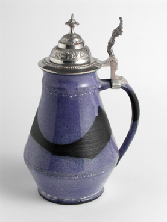
51.Krug mit Zinndeckel
Sortiment
Geschenk- und Gebrauchskeramik mit kräftigerem, markanterem Charakter.

51.Krug mit Zinndeckel
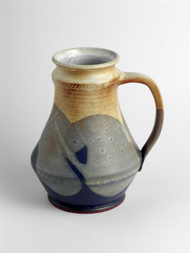
50.Krug
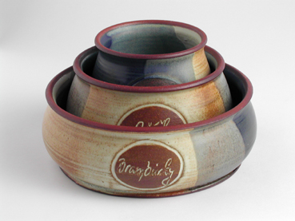
242.Partyschale fuer Salzgebaeck - auseinandernehmbar - gross
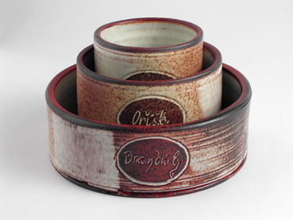
242.Partyschale fuer Salzgebaeck - auseinandernehmbar - gross
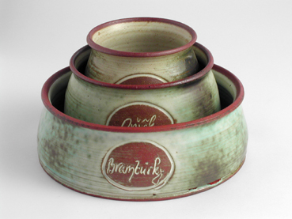
242.Partyschale fuer Salzgebaeck - auseinandernehmbar - gross
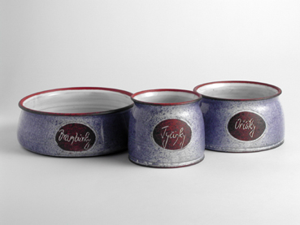
242.Partyschale fuer Salzgebaeck - auseinandernehmbar - gross
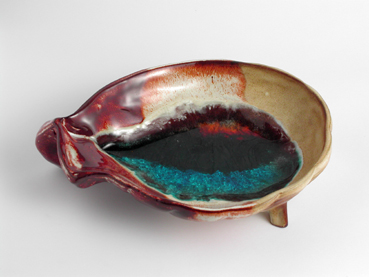
123.Nussschale
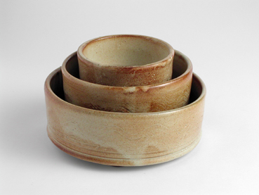
127.Partyschale fuer Salzgebaeck - auseinandernehmbar
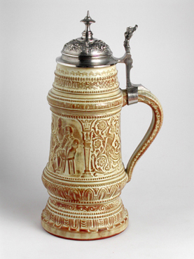
99.Humpen mit gesintertem Deckel - gross
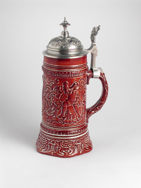
101.Humpen mit gesintertem Deckel - klein
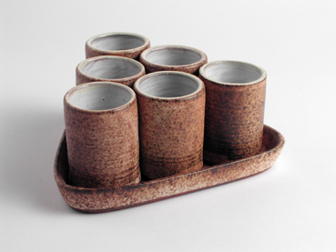
113.Likeurset
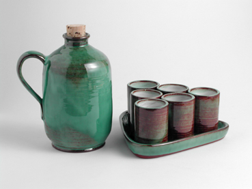
46.Flasche (fuer Alkohol), 113.Likeurset
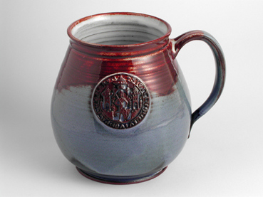
162.Bierglas mit Emblem
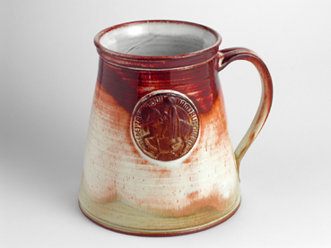
162.Bierglas mit Emblem
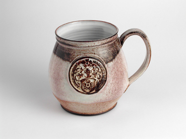
201.Drittel mit Emblem
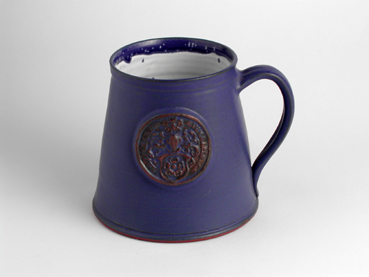
201.Drittel mit Emblem
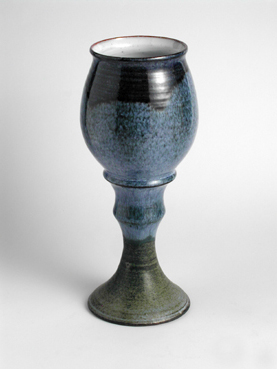
258.Weinkelch hoch rund
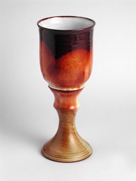
258.Weinkelch hoch gerade
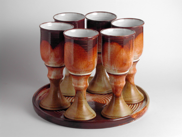
258.Weinkelch hoch gerade, 259.Untersetzser fur weinkelch
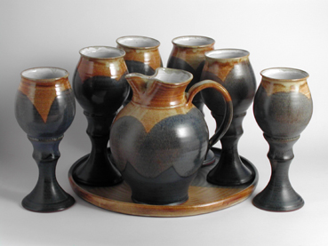
258.Weinkelch hoch rund, 259.Untersetzser fur weinkelch, 38.Krug 1.0 l
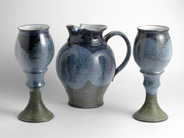
258.Weinkelch hoch rund, 38.Krug 1.0 l
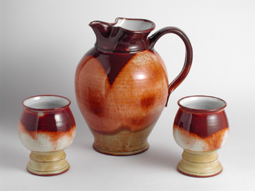
147.Weinkelch - gedreht, 39.Krug 1.5 l
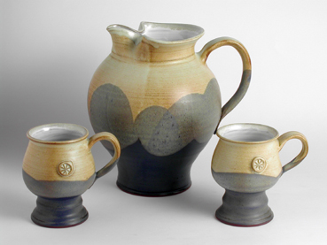
173.Weinbrenner, 39.Krug 1.5 l
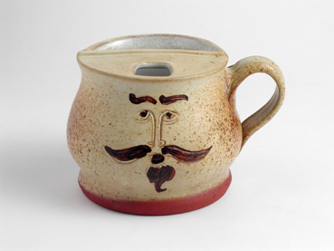
61.Tasse fuer baertige Maenner
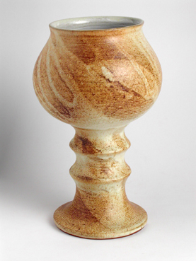
146.Riesenkelch
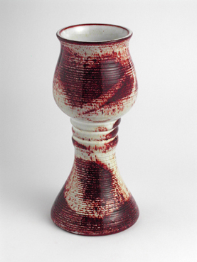
145.Kirchenkelch fuer Wein
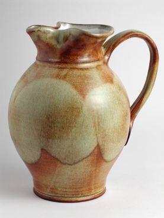
38.Krug 1.0 l
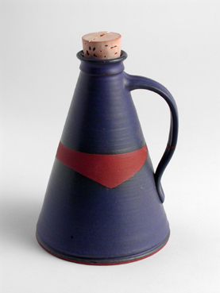
46.Flasche (fuer Alkohol)
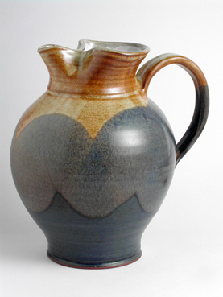
39.Krug 1.5 l
40.Krug 2.0 l
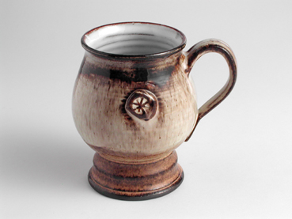
173.Weinbrenner
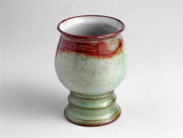
147.Weinkelch - gedreht